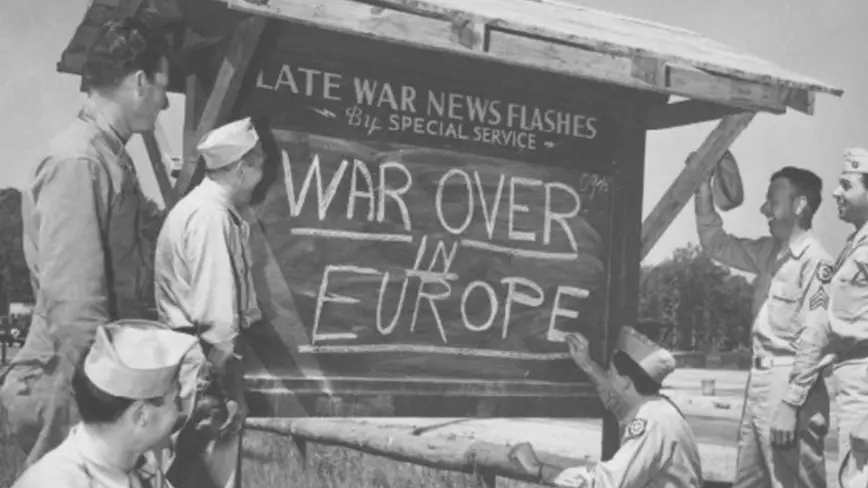

|  |
Before Fusion: EU
Europe has been at near constant warfare for the entire history of its civilization right until the end of World War II. Can it stay free of deadly and maiming conflict in the face of increasing unifying (whole of) North America, economically influential China and likely soon to be "sovereign" CIS?
Early beginnings
Over thousands of years agriculture in Europe moved in from (around) Anatolia and was present in most of Western and Central Europe by about 7000 years ago. By about 5000 year ago Europe was largely populated by agricultural communities, havin displaced the hunter-gatherer groups.
The tradition of constructing metholiths also moved into Europe from Asia Minor and slowly spread in Europe, being most prominent from between 7000 and 3200 years ago.
Around 6200 years ago Indo-Europeans started migrating from Southeast Europe and by about 3000 years ago spread throughout Europe.
The writing system was first established in Europe in the Minoan civilization of about 4700 years to 3500 ago. It was succeeded by the Mycenaean civilization of about 2800 to 3100 years ago, which was the first distinctively Greek civilization, with distinct city-states. At about the same time the Etruscan civilization in Italy also consisted of city-states.
In the Western and Central Europe the Celtic Hallstatt culture spread between about 3200 and 2500 years ago. The proto-Celtic language became the lingua franca of most of Europe in that time period.
The early Democracy
First democracy known to us started in Greece.
It had a polytheistic ideology of Gods living on a not-too-distant mountain, having their own society and life and interacting with the inferior, mortal humans from above. Humans were pawns in the intrigues of Gods but were capable of achieving greater levels of independent existence through their deeds.
Athens (continuously populated for at least 5000 years) inherited the collective experience of the Mycenaean civilization and built a democracy based on the inculturated wisdom of the preceding trade empire. It was a trade hub and as all trade dominated civilizations was more diverse and open to ideas, which naturally led to the logical advancement into democracy. Athens was well ahead of its neighbors, which likely led to an ideology of exceptionalism, making wars with inferior opponents more justified.
Before and since its democratic beginnings about 2,500 years ago Athens has been involved in a number of wars. Coalitions of different states entered offensive and defensive conflicts and Athens was right in their midst. Eventually Athens became an empire by usurping the rights of its former allies. Violence was much closer to everyone's daily lives then it is in the majority of our societies today - being a pacifist state equated to letting neighboring states take over. The Athenian empire did not engage in the war of conquest - which perhaps serves as proof of democracies being less militant than more centralized forms of governance.
It is important to note that the democracy developed in Greece was limited to non-slave, land owning men with prior military service - a natural extension of the socio-economic realities of the time. Only about 10% of the Athenian population could vote.
The empires of the antique West
The advancements of the Athenian democracy impacted the Macedonian kingdom, which followed an ideology of superiority and world domination. It briefly conquered most of Greece and the Persian Empire but quickly fell apart. This made evident the pattern became very prevalent in pre-democratic Europe, where strong leadership could not be transferred into the following generations due to the lack of a system of governance that accounted for the interests of a larger group of population.
About the same time an oligarchic republic of Rome appeared in modern day Italy. Having the violent Romulus vs Remus mythology as its starting point to believe in, Rome was driven by internal contradictions between the patricians and the plebeians. This regionally superior ideology caused it to succeed in natural power expansion conflicts on the Italian peninsula and gain the advantageous centrally controlling position in the Mediterranean Sea (after conquering the competing Carthage).
The oligarchic Republic was fragile and limited its ability to expand. Military reforms aimed at strengthening the Republic's fighting force democratized its ranks, at the cost of the troops having a much greater sense of loyalty to their generals than to the Republic, which did not sufficiently defend their rights. This led to the authority of the senate being circumvented by the hidden Triumvirate of the 3 leading generals and shortly after that the Republic became an empire - dominated by a supreme military commander with the implied goal of maintaining and expanding the ruled domain.
In the same timeframe Christian faith (and ideology) spread through Rome and caused drastic changes. Christianity was a paradigm shift from the emperor holding the status of a God to a commoner being bestowed a God like status. It simplified and expanded the forward ideas of ancient Jewish wisdom (which distilled monotheism) making it universal. Christian ideology undermined the slave system on which the Roman society was based on and greatly contributed to the demise of the Roman Empire.
By the end of the 5th century, due the various migrations of peoples in the West Roman Empire and several wars there was virtually no central control of the imperial domains. Only the East Roman Empire persisted, with its own orthodox ideological spin that promoted central control (with the early schisms between the churches taking place in the mid 5th century). It split off from the Western Empire (arguably) in the early 4th century and reached its largest domain in the 6th century, covering most of the Mediterranean. Dubbed the Greek East, its lingua franca was the Greek language. Subsequent conflicts with Persia and the muslim Caliphate reduced its domains. At the turn of the 13th century its capital Constantinople was sacked by Crusaders and the empire temporarily dissolved. By the end of the century it reconstituted but was only a regional power. It finally fell to the Ottomans in the mid 15th century.
The Post-Roman Europe
After Rome fell to hordes of peoples migrating in a number of Barbarian Kingdoms were founded in its territory. To legitimize their rule the new kings tried to connect themselves to the Roman empire. Over time the formal ties to Rome disappeared and kings assumed full control. While inheriting Christianity and Latin kingdoms built their own identity but were fragile. At the turn of the 8th century the expansionist Carolingian Empire covered most of Western Europe but (lacking advanced governance transition system) was divided between the dynastical successors and fell into civil war.
The Carolingian Empire declined in part due to the raids of the northern barbarians (Vikings) that terrorized northern (and to a degree most) parts of Europe with indiscriminate violence. Probably for a combination of reasons and driven by a relatively primitive ideology of warfare, the new wealth of the south and aided by the lack of central command in the subject areas they looted the neighboring south for persons and resources. As they raided they also began to settle the accessible areas and eventually integrate into local societies. Subsequently Normans, the descendants of the Vikings, settled in Northern France, conquered England and (briefly) Southern Italy.
The Feudal System
With the diminished power of the imperial system of governance mounted soldiers/knights began to administer the land and started hereditary rule. From the 9th century and into the 15th century the Feudal System took hold in Europe. The society was divided into the nobility, the clergy and the peasantry. To support themselves and the lords the peasants worked the land around fortified manor houses (castles) from which lords controlled the nearby area. Lords had reciprocal military and legal obligations to their suzeren. Ideology and knowledge were upkept by the clergy in monasteries.
The feudal system largely replaced slavery in Europe (either abruptly around the turn of the 11th century or gradually from the 4th to the 10th century), with the additional driver of suppression of slavery of Christians by the Church.
Lords were nobles who held land, vassals were granted possession of the land by the lords and provided (most importantly) military services to the lord. The vast majority of the population were peasants who worked the land and were subdivided into either slaves, semi-free serfs (who could only be sold collectively and with their land) or free tenants (who were a minority). In theory it was the free men that had the military duties placed on them.
This appeared to be a very natural system of incentivising the maintenance of defensive capabilities. The system of serfdom was present in Greek Sparta and land grants were introduced by the above mentioned military reform of Rome (which led to the demise of the Republic, being replaced by the Empire).
As the Middle Ages progressed professional armies and mercenaries became more common. For that reason (with nobility no longer significantly contributing to armies) and because as the result of Black Death peasants gained much more autonomy, the military dimension of Feudalism ended by 1500.
Arguably a series of crop failures and famines lead to the economic shift from the feudal system to the resource seeking capitalism, which in turn caused a disbalance between the nominally influential feudal lords and resource holding city elites (and the resulting creation of revolutionary movements like the Freemasons). The political feudal order ended a few centuries later with the course of events accelerated by the French Revolution, right before the turn of the 19th century and largely finished with the abolition of serfdom in the Russian Empire in the mid 19th century.
The beginnings of European states
Due to time constraints not all EU members will be covered below:
Central European beginnings
While the European lords were united by the Christian ideology they continued conquest against each other, building empires that continued to look to Rome for ideological backing. After a long lapse the title of the "Emperor of the Romans" was introduced at the turn of the 9th century. After the fall of the Carolingian empire (and a lapse lasting several decades) the Holy Roman Empire took on the role of Rome's successor in the mid 10th century and lasted into the 19th century (but partially collapsed due to overextension) until the Napoleonic wars. Though it never claimed to rule the restored West Roman Empire.
The Holy Roman Empire subjugated most of Italy and unified the Germanic Central Europe, holding back further westward expansion of the then pagan Hungarians and Slavs. Starting out as a feudal state, its governance depended on mutual cooperation between the emperor and the vassals. The Emperor's legitimacy rested on the fact that he inherited power from the ancient emperors of Rome, considering him the first among equals in all of Europe's Catholic monarchs.
Beginnings of Denmark
The Roman and the Carolingian empires came close to the borders of Denmark who were among the people known as Vikings. As part of the Viking raids Danes besieged Paris and the Loire Valley in the 10th century. Subsequently a group of Danes was given permission to settle northwestern France promising to defend the coastal area against further attacks and establishing Normandy. During the age of the North Sea Empire of the late Viking age (in the early 11th century) England had completely submitted to Danes. By the late 13th century as a result of conflicts between the king, nobles and the church a charter was created which is considered the first constitution of Denmark.
Swedish beginnings
Swedish recorded history starts in the 11th century. Statehood estimates of Sweden range from the 6th to the 16th century with some laws present from the 13th century. By late 14th century Sweden began unification with Norway and Denmark, leading to the Kalmar union of the 15th and early 16th centuries. In the later stages of the union Sweden rebelled and elected a separate king.
Beginnings of France
After the Carolingian empire France became very decentralized with authority of the king being largely religious. This peaked in the 11th century when the provinces were de-facto governed independently. The vassals in name only increasingly asserted more authority and built some of the strongest states in Europe, with the most famous example being the Normans. France became truly centralized in the mid 13th century. From then royal attacks on the barons strengthened the monarchy and the authority of the king gradually became more accepted.
After a series of french led Crusades, two royal houses claimed the throne and the Hundred Year's War period ensued. It is during this time that French Nationalism was born, represented by the iconic Joan of Arc. Absolute sovereignty in France wasn't established until the 16th century.
Germanic beginnings
Christianity was introduced in Western Germany during Roman times. Subsequently invasion of the Huns triggered the Migration Period with the Germanic people (including the Vandals) moving into Western Roman Empire. Leading to the formation of the Holy Roman Empire a series of Duchies constituted the traditional Germanic territory. They were finally abolished and broken down into smaller units in 1180. German monarchies expanded North and East and founded a series of border countries, including Austria.
Dutch beginnings
In the 10th and 11th centuries the Holy Roman Empire wasn't able to maintain the political unity of the Low Countries of the modern Netherlands. The city states of the area were in almost constant war or in defensive unions. Frankish settlement led to creation of the Old Dutch language and identity. At the turn of the 12th century local farmers began cultivating uninhabited swampy land in the west, which provided the resource base to the creation of the centralized County of Holland. A series of wars between 1350 and 1490 led to the creation of the Habsburg Netherlands.
Italian beginnings
As a result of the Gothic War in mid-6th century Italy, Germanic Lombards gradually took over Italy. Threatened Papacy appealed to the Franks who defeated the Lombards in the mid-8th century and allowed for the establishment of Papal States in central Italy. After the power of the Charlemagne Empire began to decrease the Papal states were threatened by the Caliphates in the South and the defense-united city states in the North.
The Papacy regained its authority in the 11th century with the recovery of trade. In the early 12th century the Pope regained the ability to install bishops (while consulting with the Holy Roman empire in case of controversy). In the late 12th century the Lombard League city-states of the North warred for and won autonomy from the Holy Roman Empire, while the Normans ended Muslim rule in the South.
By the 13th century the northern states prospered through commerce and were ruled by oligarchical governments. From that evolved merchant republic with the Republic of Venice being the most prominent one. By the 14th century Florence, Lucca, Genoa, Venice, Siena and other states became rich financial and commercial centers. From the 10th century the coastal cities built increasingly capable fleets to protect trade. Venice and Genoa controlled trade with the Byzantine Empire and the Caliphate. Their fleets were leading the effort of transporting Crusaders to the Holy Land. By then Rome was largely in ruins and the pooper Papal States had little law and order and the Papacy relocated north.
Iberian beginnings
After the post-roman domination of the Visigothic Kingdom, Hispania fell to the Muslim conquests in the early 8th century. Almost immediately the Reconquista began with Christian forces finally recapturing all of Spain in the late 15th century.
In the end of 11th century Portugal broke away from the Kingdom of Galicia. Subsequently in the mid-13th century the Muslim Moors conquered the North of the country and Lisbon became the capital. In the late 14th century the Portuguese defeated the Castilians and established a political alliance with England.
Slavic beginnings
First Slavs in recorded history existed between the German tribes in the West and the nomadic Sarmatians in the East since the 1st century in at least the present day Poland. Their descendants appeared at the Byzantine frontier in the early 6th century. They were described as democratically ruled barbarians that believed in one god to whom they made sacrifices. The prevalent Eastern Homeland theory states that as the Germanic tribes were fleeing the Huns, Slavs expanded west into their territory becoming the West Slavs, southward to modern day Austria and the Balkans becoming the South Slavs and northward becoming the East Slavs.
The first known Slavic state was Samo's Empire which was a tribal union of West slavic tribes including the Czechs and existed in the early to mid 7th century. Its successor was the Great Moravia of the 9th century that spanned the modern east of Germany, south of Poland, Czech and Slovak, east of Austria, Hungary, west of Romania and north of Serbia. It disintegrated after the Hungarian invasion around the turn of the 10th century.
Southern and Eastern Slavs
In the late 7th century The First Bulgarian Empire was founded north of the Byzantine Empire as an alliance between the Bulgars and Southern Slavs. It lasted into the 11th century (when, after sieging Constantinople and a series of wars it surrendered to the Byzantine Empire) and was the Slavic cultural center where the Cyrillic alphabet was invented. It was succeeded by the Second Bulgarian Empire of late 12th to the early 15th centuries when it fell to the Ottomans.
Polish beginnings
The closest ancestors of Poles were the West Slavic Lechites. They established settlements in present day Poland during the Early Middle Ages, starting with the 6th century. These were recorded to be tribal in the 9th century.
The Polish state was established in the late 10th century. Very shortly after that Christianization of Poland began, which took centuries, with a large push after pagan revolt in the early 11th century. Until the mid 11th century Poland was expanding, bringing Christianity with it.
From the late 10th century and until late 12th century Poland was involved in a number of conflicts with the Kievan Rus'. Subsequently in the 13th century Poland was involved in conflicts with the Kingdom of Galicia-Volhynia. Subsequently the conflicts with the Russian state resumed in the early 16th century and culminated with a brief occupation of the Tsardom of Russia in the early 17th century. At times, the conflicts of various levels continued until the late 20th century.
From the mid 12th century and until the early 14th century Poland underwent a process of feudal fragmentation. The monarchy was effectively restored in the early 14th century with Poland subsequently expanding eastward by mid-century. In the early 13th century a regional ruler formed a military alliance Teutonic Order that soured and caused centuries of warfare with the Order and later the German Prussian state. Poland finally won the conflict in the late 15th century, expanding westward through feudal fiefdom of subjugated areas.
In the mid 13th century Poland was invaded by Mongols who briefly occupied it and continued to raid it into the late 13th century. In the late 14th century Poland was briefly ruled by Hungary after a monarchial crisis of succession. Common monarchical rule between Poland and Hungary was also established in the mid 15th century.
Poland developed increasingly close ruling class ties with Lithuania in the 14th to 16th centuries, with the creation of the Polish-Lithuanian Commonwealth in the late 16th century. A unitary state was created in the late 18th century.
As early as late 11th century Polish nobles held significant influence in the Polish state, being able to expel a monarch from the state. In the late 14th century the Privilege of Kassa was granted to the Polish nobility, releasing them from many feudal duties. The General Parliament was established in Poland also in the late 14th century. In the early 15th century the rights of Polish nobility were further strengthened by Neminem captivabimus, which guaranteed due process. In the early 16th century the Nihil novi act transferred most of the legislative power from monarchy to parliament.
From the mid 15th century and until the very end of the 17th century Poland underwent a number of conflicts with the Ottoman Empire.
Czech beginnings
The Duchy of Bohemia (or the Czech Duchy) was formed in the late 9th century as part of the disintegrating Moravia. At that time Moravia was already under the process of Christianization which lasted into the early 10th century.
Struggling against the Polish occupation Bohemia and Moravia became parts of the Holy Roman Empire at the turn of the 11th century. In the early 13th century the Duchy gained in status and became Kingdom of Bohemia was established under the Holy Roman Empire and lasted until the end of WWI. In the early 14th century the disputed Duchies of Silesia were transferred from Poland to the Kingdom of Bohemia.
The 13th century Mongol raids into the region were successfully repelled.
From the late 13th century the representation of city clerical elites became instituted in provincial assemblies.
From the late 14th century Bohemia and Moravia underwent the popular process of theological reformation. After religious wars in the early 15th century the reformists submitted to the Roman Catholic Church while allowing them to keep their practices.
Beginnings of Hungary
A confederation of seven Hungarian (or Magyar) tribes moved into modern Hungarian territory and established a state in the late 9th century. Claiming a continuation from the earlier Huns they led a number of raids into surrounding territory until being defeated in the mid 10th century. Christianization of Hungary ensued subsequently in the early 11th century.
In the 12th and 13th centuries Hungary expanded its domain to the Balkans. In the early 13th century the "Golden Bull" forced constitutional limitations on absolute monarchy in Hungary. Subsequently Hungary became the first country with a parliamentary supremacy over monarchs.
In the mid-13th century Hungary was devastated by the Mongol invasion, losing between 20% and 50% of its population, with only fortified cities and abbeys surviving the attacks. Hungary regained its prosperity in the 14th century and gained a close alliance with Poland.
Following the Check proto-protestant movement Hungary went through anti-feudal and anti-clerical revolt in the mid 15th century. At about the same time Hungary fought the Ottoman Empire for additional territory and gained its monarchical zenith in the late 15th century. Hungary was the second country to experience Renaissance after Italy.
Beginnings of Romania
Dacians were the earliest people recorded as living in modern-day Romania around 2500 years ago. At the turn of the second century most Dacians were conquered by the Roman empire, with at least two subsequent recorded rebellions. Dacia remained under Rome until the late 3rd century, when Rome withdrew due to Goth advancements and was also populated by the Carpi people. It was briefly reconquered by Rome in the early 4th century. Evidence of the formation of the Proto-Romanian language was first recorded in the 5th century. There is a debate on the mixed Daco-Roman population being the ancestors of modern Romanians.
In the late 4th century the region was conquered by Huns and remained under them until mid 5th century. Subsequently it was occupied by Gepids until late 6th century and then briefly the Lombards and then Avars until late 8th century. Part of modern Romanian lands were under the First Bulgarian Empire from the late 7th century with more lands being incorporated in the early 9th century. By the 10th century the Pechenegs controlled the area. Subsequently the Cumans were present in the 11th and 12th centuries. The Uzes were also recorded to live in the territory of Romania.
There is also a view that the first Vlach/Wallachian and Romanians appeared in the area in the 13th century after migrating north from the Balkans. The Principality of Wallachia was founded in the early 14th century (after weakening of the Hungarian state by Mongol invasions) and (though often under heavy Ottoman influence) existed until the mid 19th century, when it unified with Moldavia and became Romania.
The Crusades
During the Medieval times the Western and Central Europe were united by the ideology of the Latin Church (which now constitutes the majority of the Catholic Church, having 1.3 billion members). All western European kings had to be confirmed by the Pope. In the mid 11th century the East-West schism took place that separated the then slim majority of Eastern Christians (now numbering 220 million) from Rome (due to among other things the Pope's claim to universal jurisdiction). None-the-less at the end of the 11th century Pope proclaimed the First Crusade to promote military support of the Byzantine empire. The intent was to reconquer Jerusalem and its surrounding area (the Holy Land) from Muslim rule.
The initial violent People's Crusade was followed by a more organized ideological effort that led to the creation of the Crusader states along the Mediterranean coast of the Levant. The European people participating in the crusade wars were motivated by the prospects of spiritual salvation, satisfaction of feudal obligations and economic or political advantage. The core of the Crusader armies was formed by various military-religions orders of knights.
The Holy Land Crusader states lasted until the end of the 13th century but the Crusades continued in other parts of the world, including the Spanish Reconquista, the Northern crusades against pagans and the Orthodox Christian Slavs, crusades against Christians in Europe (and the Byzantine Empire) and the crusades against Ottomans. Crusades finished by the end of the 16th century.